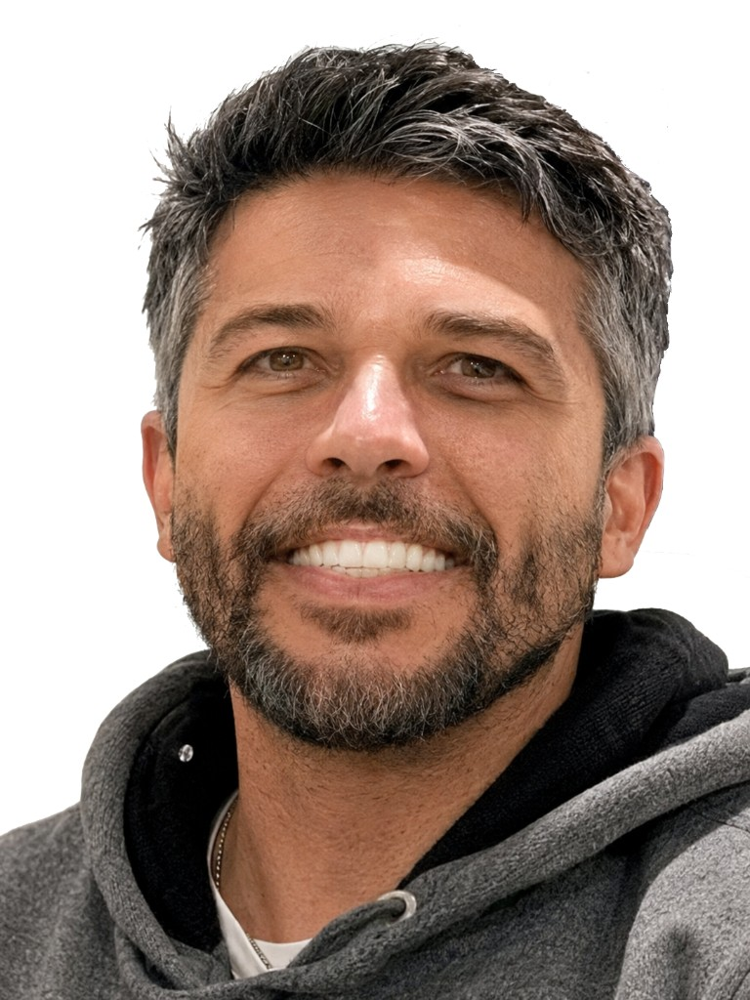

📋 Resumo do caso
- Data: Quinta-feira, 14 de maio de 2026
- Local: Cachoeira do Cordovil — Santuário Volta da Serra, Alto Paraíso de Goiás (9 km de São Jorge, 29 km de Alto Paraíso)
- Vítima principal: Menina de 8 anos — ferimentos no rosto, cirurgia plástica no Hran (Brasília), estado estável
- Também ferida: Mãe da criança — arranhão no braço ao defender a filha, recebeu vacina antirrábica
- Animal: Onça-parda (suçuarana) — estava no chão próxima a vegetação, fugiu para a mata após ser espantada
- Medida imediata: Santuário suspendeu visitação para revisão de protocolos de segurança
🌿 O que realmente aconteceu
A família havia ido à Chapada dos Veadeiros para celebrar o aniversário da menina, completado na quarta-feira, 13 de maio. Eles foram até a Cachoeira do Cordovil para festejar a data. Ao retornar da cachoeira, a onça-parda avistou o grupo.
Diferentemente do que foi divulgado inicialmente, a onça não estava em cima de uma árvore no momento do ataque: o animal estava no chão, próximo a uma vegetação. Assustado, o felino fugiu para a mata após ser espantado pelos adultos. O pai da menina e um colaborador do santuário entraram em confronto direto com a onça para interromper o ataque — o funcionário chegou a usar a própria mochila como escudo, levada pelo animal durante a fuga.

A criança foi atendida inicialmente no Hospital Municipal de Alto Paraíso. Diante da complexidade do caso, foi transferida para o Hospital de Base do Distrito Federal (HBDF) e, em seguida, ao Hran, referência em cirurgias plásticas no DF. A cirurgia durou a manhã de sexta-feira inteira, sem complicações. A avaliação indicou lesões superficiais, sem perda óssea.
A mãe também foi ferida: ao se jogar na frente da filha para espantar o animal, recebeu um arranhão no braço e foi vacinada contra raiva.
🐾 Comportamento da onça-parda: por que este caso é raro
A onça-parda — também chamada de suçuarana ou puma — tem hábitos discretos e solitários, e evita naturalmente o contato com pessoas. A guia Janna, com mais de 10 anos de atividade na natureza da região, declarou que nunca havia avistado uma nas trilhas durante suas expedições.
"Eu mesma, em mais de 10 anos de atividades na natureza na Chapada dos Veadeiros, nunca avistei uma onça-parda nas trilhas. Ataques como esse são extremamente raros."
— Janna, guia de turismo da Chapada dos Veadeiros
O biólogo e mestre em Ecologia Vitor Sena reforça a excepcionalidade do caso e pede equilíbrio na reação pública:
"Ataques são extremamente raros e acontecem geralmente por aproximação inesperada, reação defensiva ou presença de filhotes. É importante cuidar da vítima, mas evitar vilanizar o animal — a ocorrência foge completamente do comportamento esperado da espécie."
— Vitor Sena, biólogo e mestre em Ecologia
Segundo especialistas, o aumento de avistamentos em áreas turísticas se deve à expansão urbana e à fragmentação do habitat do cerrado. Não é que o animal "invadiu" a cidade: somos nós que estamos ocupando áreas cada vez mais próximas dos habitats naturais. Na maioria dos casos, ao perceber a presença humana, a onça simplesmente recua e vai embora.
🛡️ O que fazer ao encontrar uma onça-parda na trilha
Após o incidente, guias de turismo e proprietários de pousadas da Chapada dos Veadeiros divulgaram protocolos de segurança. As orientações são unânimes:
Mantenha a calma
Não entre em pânico. Reações bruscas podem provocar o instinto predatório do animal. Controle o grupo.
Nunca corra
Correr ativa o instinto de perseguição do felino. Este é o erro mais grave e perigoso que se pode cometer.
Pareça maior
Levante os braços, abra o casaco, erga a mochila acima da cabeça. Fale firme e em voz alta para intimidar.
Recue de frente
Nunca dê as costas para o felino. Mantenha contato visual e saia da área lentamente, sempre de frente.
Crianças no colo
Se estiver com crianças, pegue-as no colo imediatamente. Crianças em movimento são mais vulneráveis.
Evite horários de pico
A onça-parda é mais ativa ao amanhecer e ao entardecer. Evite trilhas isoladas nesses períodos e prefira guia.
⚠️ Regras adicionais de segurança
- Não se aproxime nem tente fotografar — manter distância é fundamental
- Nunca tente alimentar ou encurralar o animal — reação defensiva pode ser violenta
- Permaneça em grupo — a presença unida inibe o comportamento predatório
- Não faça trilhas sozinho em áreas isoladas, especialmente ao amanhecer e ao entardecer
- Em caso de ataque efetivo, reaja — use a mochila como escudo, faça barulho, lute
🧭 A Chapada dos Veadeiros continua segura?
Sim. Ataques de onça-parda a humanos são eventos absolutamente excepcionais. A Chapada recebe dezenas de milhares de turistas por ano — e este tipo de ocorrência é raro ao ponto de não existir registro recente anterior na região. O Santuário Volta da Serra agiu com responsabilidade ao suspender temporariamente as visitas para revisão de protocolos e sinalização.
Filosofia do guia local
A Chapada dos Veadeiros é extraordinária e, exatamente por isso, merece ser vivida com respeito e preparo. Um condutor experiente adapta o roteiro para entregar o melhor de cada visita — e, em momentos inesperados como um avistamento de fauna, sabe exatamente o que fazer. Esse é o valor insubstituível de ir acompanhado.
❓ Perguntas frequentes
O Santuário Volta da Serra está aberto para visitas?
No momento da publicação deste artigo, o santuário estava com visitação suspensa temporariamente para revisão dos protocolos de segurança. Recomendamos confirmar diretamente com o local antes de planejar sua visita à Cachoeira do Cordovil.
Devo cancelar minha viagem à Chapada dos Veadeiros?
Não. Este episódio é raro e isolado. A Chapada dos Veadeiros é um dos destinos de ecoturismo mais seguros e extraordinários do Brasil. Com guia experiente e as devidas precauções, sua visita será memorável e tranquila.
O que fazer se for atacado por uma onça?
Reaja ativamente. Use objetos como escudo (mochila, galhos), faça barulho, grite e resista. O objetivo é demonstrar que você não é uma presa fácil. Busque socorro médico imediatamente, incluindo vacina antirrábica.
Como prevenir o encontro perigoso com onças nas trilhas?
Faça barulho durante a caminhada — a onça tende a recuar ao perceber presença humana. Ande sempre em grupo, evite trilhas isoladas ao amanhecer e entardecer, e conte com um guia local que conhece o comportamento da fauna e o estado de cada atrativo.
Pronto para planejar sua visita?
Conte com a Guia Chapada Veadeiros para montar o roteiro ideal para a época em que você vai, seja na chuva, na seca ou na transição. Cada visita é única e você vai aproveitar 100%.
💬 Planejar minha visita no WhatsApp
Brasileiro, nascido no Rio de Janeiro em 1982, naturalizado italiano, pai, analista de sistemas formado pela PUC-Rio, Diego Navi trocou o escritório pelo cerrado e fundou a Guia Chapada Veadeiros em 2017. Fluente em inglês e espanhol, conduziu dezenas de grupos com segurança pela Chapada dos Veadeiros em todas as épocas do ano e conhece cada cachoeira, cada trilha e cada cantinho deste portal da Terra desde 2009.
Diego Navi Marques Carvalho
Guia local e Fundador da Guia Chapada Veadeiros